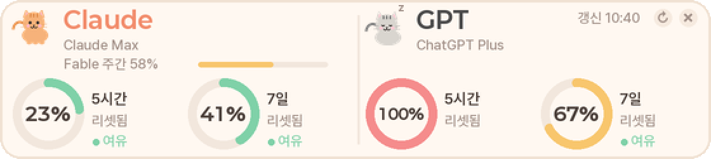
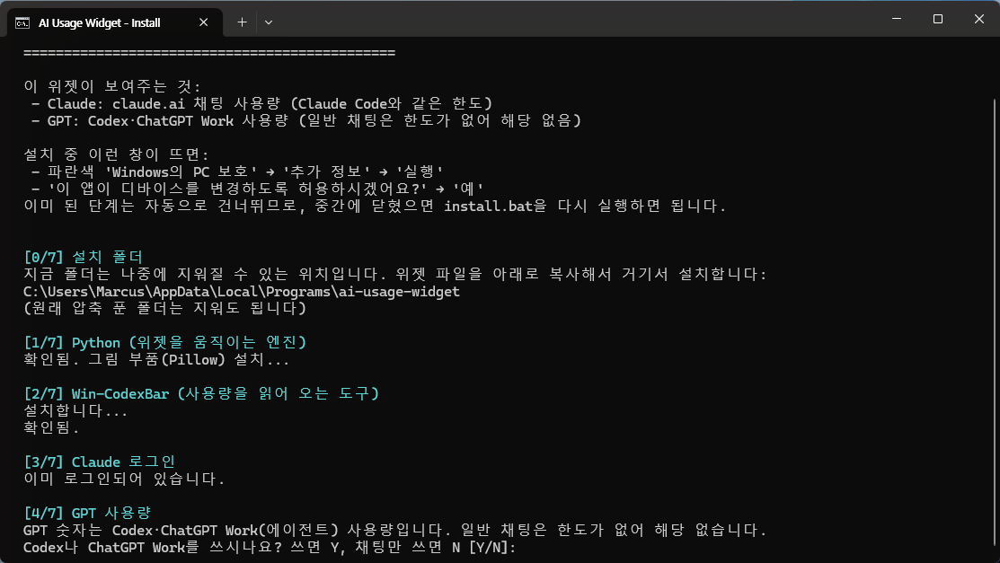
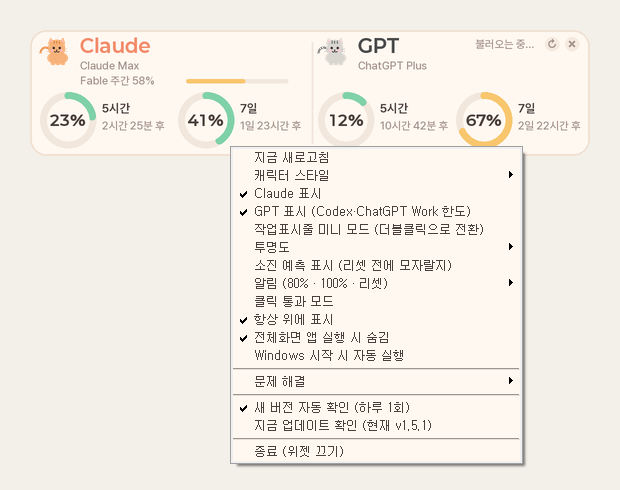
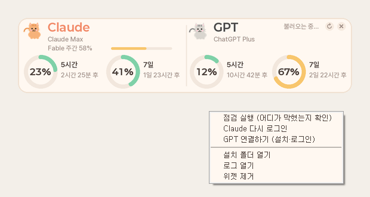

AI 사용량 위젯
Claude와 GPT(Codex·ChatGPT Work)를 얼마나 썼는지 화면 한구석에 항상 보여줍니다.

설치 (약 5분)
ZIP을 아무 폴더에나 풉니다. 다운로드 폴더여도 됩니다. 설치가 끝나면 안전한 곳으로 옮겨 줍니다.
파란 "Windows의 PC 보호" 창 → 추가 정보 → 실행
"변경을 허용하시겠어요?" 창 → 예
Claude 로그인 창이 뜨면 → Claude account with subscription 선택 → 브라우저 로그인 → > 입력창이 보이면 /exit 입력
"Codex나 ChatGPT Work를 쓰시나요?" → 쓰면 Y, 채팅만 쓰면 N
"Windows 켤 때 자동 실행?" → Y 또는 N

화면 왼쪽 위에 카드가 뜨면 설치 완료입니다. 다운로드 폴더의 압축 푼 폴더는 지워도 됩니다.
평소 사용
바탕화면 AI 사용량 위젯 더블클릭. 이미 켜져 있으면 앞으로 나옵니다.
위젯 우클릭 → 맨 아래 종료. 다른 설정도 이 메뉴에 있습니다.
카드를 드래그하면 됩니다.
숫자나 글자 위에 마우스를 올리면 설명이 뜹니다.
카드를 더블클릭하면 작업표시줄 안의 작은 모드로 바뀝니다. 다시 더블클릭하면 카드로 돌아옵니다. 작은 모드는 좌우로 드래그해 자리를 옮길 수 있습니다.

화면 읽는 법
| 5시간 | 지금 쓰는 세션의 사용량. 아래 회색 글자는 리셋까지 남은 시간 |
| 7일 | 일주일 한도의 사용량 |
| 색 | 초록 여유 · 노랑 절반 넘음 · 빨강 거의 다 씀 |
| GPT 숫자 | Codex·ChatGPT Work(에이전트) 사용량. 일반 채팅은 한도가 없어 해당 없음 |
| "N분 전 값" | 잠시 조회가 안 돼 마지막 값을 보여주는 중. 보통 저절로 돌아옵니다 |
| "재로그인 필요" | 아래 문제 해결 메뉴에서 Claude 다시 로그인 |
문제가 생기면
위젯 우클릭 → 문제 해결

| 점검 실행 | 어디가 막혔는지와 해결 방법을 보여줍니다. 뭐가 문제인지 모를 때 먼저 누르세요 |
| Claude 다시 로그인 | "재로그인 필요"가 뜰 때 |
| GPT 연결하기 | 설치 때 N을 눌렀다가 나중에 GPT도 보고 싶을 때 |
| 설치 폴더 열기 | 이 파일들이 있는 곳. 다운로드 폴더를 지웠어도 여기 있습니다 |
설치 폴더는 보통 C:\Users\(내이름)\AppData\Local\Programs\ai-usage-widget 입니다.
제거
설치 폴더의 uninstall.bat 더블클릭. 바로가기·자동 실행·위젯 폴더만 지웁니다.
함께 설치된 프로그램(Python, Win-CodexBar, Claude Code, Node.js)은 다른 용도로도 쓰일 수 있어 남겨 둡니다. 지우려면 Windows 설정 → 앱에서 각각 제거하세요.